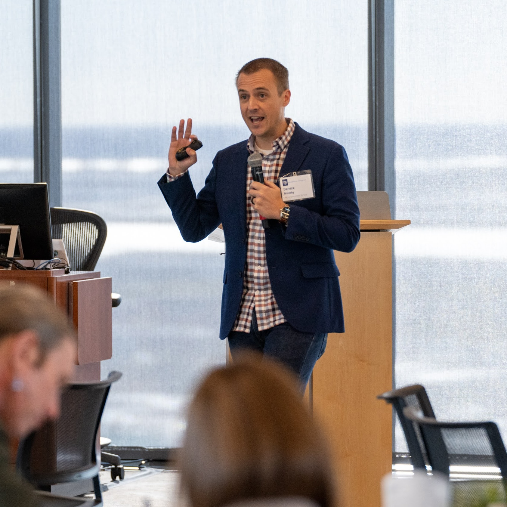
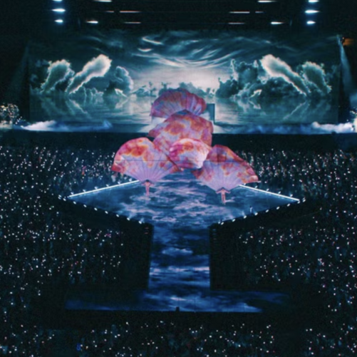

Derrick Bransby · Builder & Strategist · HBS PhD
I help organizations perform better — and I've made it my work to understand why they don't. My work connects strategy, operations, and the interpersonal dynamics that drive results.
About
I started my career as an engineer, trained to solve problems with logic, data, and process. As a consultant, I led engagements focused on improving performance — retooling systems, rethinking operations, and partnering with executives to deliver change. I built new lines of revenue, managed teams, and learned to move between the boardroom and the front line.
Over time, a pattern emerged. The systems were sound. The data were clear. But still, execution broke down. Eventually, I realized I was blind to the human dimensions of work: the interpersonal dynamics, the way decisions are actually made, and the unwritten rules that govern how teams operate. That was the layer I was missing — and the one I most wanted to understand.
At HBS, my research has focused on understanding exactly that. I study how teams perform under pressure — the human and organizational dynamics that shape whether execution succeeds or falls short. I do this work close to the ground: embedded in and alongside the teams and organizations I study, producing insights that are steeped in practice and legible beyond it.
Now, I'm looking to bring that combination into industry — into roles where I can build and scale new functions, work closely with leadership on high-priority initiatives, and be held accountable for outcomes, not just analysis.


Experience
Design and led a field research program focused on team performance,
Led client engagements focused on performance improvement and organizational change. Built new lines of revenue, managed
Delivered analyses and executive briefings for U.S. Government clients, synthesizing complex data into decision-ready insights for senior officials. Developed advanced analytical tools to identify emerging risks for financial-sector clients.
Research
Most performance failures aren't resource problems — they're execution problems. My research examines the dynamics that determine whether teams succeed under pressure: how work is structured, how people coordinate, and how organizations adapt when conditions change. The goal is insight that travels — from the field into practice.
I am a Research Affiliate at the Johns Hopkins Center for Innovation Leadership.
Contact
I'm currently open to conversations about strategy and operations roles, advisory work, and research collaboration. If something here resonates — or if you'd simply like to connect — I'd love to hear from you.